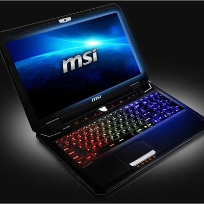

Nombre del alumno:Carlos Daniel Mendoza Dzul
Licenciado en lapices
Que es una laptop
Es una computadora que principalmente es portatil osea que la puedes llevar a cualquier lugar
Ejemplos de computadoras de distintos tipos
Laptop para tareas y para ver videos, estas laptos son muy comunes porque se empezaron a usar mucho en la pandemia debido a las clases virtuales
Laptop para juegos ligeros y trabajo de oficina, esta laptop se puede usar para largas jornadas de trabajo porque son mas potente a la hora de hacer tareas
Laptops Gamer, Estas son las mas caras porque son bastante potentes y principalmente se usan para jugar y para trabjos que requieran mucha potencia
Aqui describi de manera breve un poco la clasificacion de las computadoras y su uso, tambien mostre ejemplos para que las personas se den un ejemplo de como son